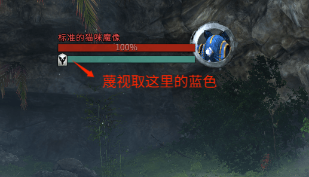
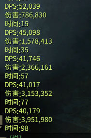

直伤灵刃 匕剑/大剑
幻影除魔，匕剑3，匕剑5，五豆=旋刃魂曲，匕剑2，切武器|强力钉刺，五豆=旋刃魂曲，五豆=和谐咏刃，五豆=悲伤咏刃，五豆=不谐咏刃，幻影除魔，大剑3，大剑2，大剑4，武器4黑=幻光纹章，千刀万剐，匕剑3，匕剑5，匕剑2，武器2黑=武器3黑=武器4黑=切武器，武器2黑=武器3黑=武器5黑=切武器，大剑2=1=剑刃暴雨，普攻|苦痛咒语|蔑视，谦逊纹章，五豆=不谐咏刃，大剑5，匕剑4
幻影除魔,7,781|匕剑3,3,355|匕剑5,5,880|五豆|旋刃魂曲,F5,10|匕剑2,2,424|切武器,`,120,3,200|强力钉刺,9,1|和谐咏刃,F1,650|悲伤咏刃,F2,480|不谐咏刃,F3,480|大剑3,3,320|大剑2,2,680|大剑4,4,580|武器4黑|幻光纹章,6,920|千刀万剐,0,1|武器2黑|武器3黑|武器5黑|剑刃暴雨,8,682|普攻,1,30|苦痛咒语,9,1575|蔑视|谦逊纹章,0,800|大剑5,5,350|匕剑4,4,50,4,580
[&DQcKGQEdQiojDyMPjwGPAd0afwFpAYIB5RrtEgAAAAAAAAAAAAAAAAAAAAADLwBaADIAAA==]
全局 0.9
强力钉刺是咒语的第二段 ，取色取右上角那个小小的数字2
指定循环是用来自动破蔑视的，千刀万剐和谦逊纹章都取色，实战的时候需要什么就带什么
取色是识别坐标的颜色，蔑视条的取色 一定要靠近蔑视条的左端


能优化的大佬给优化一下吧
本想复刻一下 省的来回切宏的，改来改去 还是比旧版低3k
评论列表（25）
》》》不能衔接烟花或者克达古物啊~~《《《《
@小小呃 会断很长时间的烟花古物效果
删掉了瞬发技能的苦痛咒语，以强力钉刺2次起手打循环，切武器绑定的跟随技能1给解除了（因为不知道为啥要这么设定）。打桩可以提高到35.5k，能提高5-6K。
我取色了好几遍，只放4个技能然后就一直平A了，破魔 剑3 大剑3 强力钉刺… 这4个，重新取色了3、4次，切全屏，切窗口都是这样，请问要怎么解决这个问题呀，叽叽~
幻影除魔，匕剑3，匕剑5，五豆=旋刃魂曲，匕剑2，切武器|强力钉刺，五豆=旋刃魂曲，五豆=和谐咏刃，五豆=悲伤咏刃，五豆=不谐咏刃，幻影除魔，大剑3，大剑2，大剑4，武器4黑=幻光纹章，千刀万剐，匕剑3，匕剑5，匕剑2，武器2黑=武器3黑=武器4黑=切武器，武器2黑=武器3黑=武器5黑=切武器，大剑2=1=剑刃暴雨，普攻|苦痛咒语|蔑视，谦逊纹章，五豆=不谐咏刃，大剑5，匕剑4
幻影除魔,7,781|匕剑3,3,355|匕剑5,5,880|五豆|旋刃魂曲,F5,10|匕剑2,2,424|切武器,`,120,3,200|强力钉刺,9,1|和谐咏刃,F1,650|悲伤咏刃,F2,480|不谐咏刃,F3,480|大剑3,3,320|大剑2,2,680|大剑4,4,580|武器4黑|幻光纹章,6,920|千刀万剐,0,1|武器2黑|武器3黑|武器5黑|剑刃暴雨,8,682|普攻,1,30|苦痛咒语,9,1575|蔑视|谦逊纹章,0,800|大剑5,5,350|匕剑4,4,50,4,580
这个能打多少
强力丁次可以直接换成 幻影防御
大佬，换成幻影防御怎么设置取色呀？
为什么我复制过来少了一堆延迟数据
为什么打起来老是一下就把钉刺放完，然后无限卡苦痛
@求助者 把瞬发技能里的苦痛咒语删掉，以强力钉刺2次起手开始就可以了。
为什么我开启不了
分享了一半，我搞了一下午，哈哈哈哈
试了下容易f123有时候会一起按，有时候触发不了烟花
写的真不错，8年前老电脑都打40
扒的m佬以前的单板循环
大佬，能不能把大剑5和f5设置成绑定使用呢？
可以的 蔑视的是 纹章跟随大剑5 就行了 前提是你刚刚好在大剑武器组
为啥我按照你这样的设置只能打35呢
打桩的时候别往木桩上放蔑视条
我自己全增益，400万木桩全症状，120的灌注，食物扳手，最好的时候就36K，是不是哪里没设置好
再重新弄一下 我循环重新发了，现在帖子里的是改完的
大佬 你这个指定循环看不懂啊 蔑视是指BOSS的蔑视条吗？ 后面的谦逊纹章是精英技能，但精英技能应该放千刀万剐了的
这个无所谓，指定技能 蔑视条识别到了后，会一次释放后面的几个技能，不在循环输出中不重要。
蔑视怎么取色？后面的谦逊纹章哪来的？